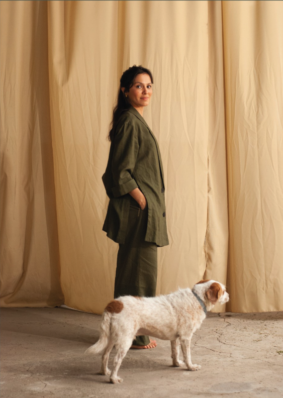

Quem é Bibbó?
Amante da cultura brasileira, da fotografia, de relíquias históricas e das cores, Tamiris Bibbó é a arquiteta fundadora do escritório, que tem projetos espalhados pelo Brasil.
Paulista, mas com o pé e coração em Minas e na Bahia, sua trajetória é recheada de experiências em escritórios prestigiados como Gustavo Penna &A., Studio Dlux e Gema Arquitetura.
O bibbó é o mais novo escritório ganhador do Concurso Arch Pro.